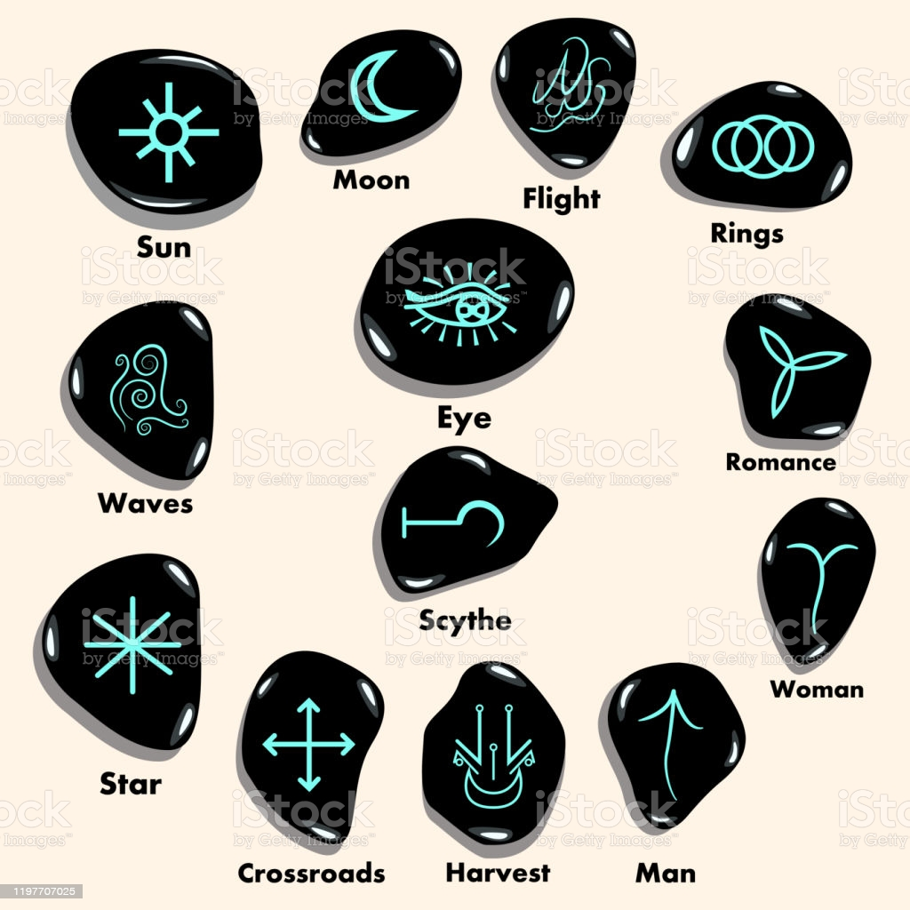

Antes de qualquer coisa dentro da magia, uma coisa que deve ser feita é meditação e percepção energetica, assim você se adianta no assunto e evita que espiritos zombeteiros ou espiritos com más intenções no geral tenham qualquer efeito sobre você, já que, se você percebe a energia deles, você consegue se proteger/previnir antes de qualquer coisa ruim acontecer.
A primeira coisa a ser feita para entrar em alfa é o relaxamento, existem diversas tecnicas de relaxamento encontradas no livro A Dança Cosmica Das Feiticeiras, um exemplo desse exercicio é feche os olhos e mantenha um ritmo na sua respiração, inspire devagar, retenha o ar por 1 segundo e expire. Concentre-se nos dedos dos pés, inspire contraindo-os o máximo que puder, retenha-os apertados por 1 segundo e expire relaxando-os completamente. Repita esse procedimento nos tornozelos, panturrilha, coxas, bumbum, barriga e peito, quando chegar aos ombros, estique um pouco o pescoço para frente e inspire contraindo-os, retenha e expire relaxando todos os músculos, para finalizar inspire contraindo o máximo que puder os músculos do rosto(olhos e boca bem apertados), retenha e expire relaxando.
1. Sente-se para meditar em posição confortável estando diante de si com representações dos quatro elementos – terra(um cristal ou areia), fogo(vela), água(copo d'água) e ar(incenso).
2. Pratique a meditação por, pelo menos, cinco minutos para chegar a um estado de maior relaxamento.
3. Após isto, de olhos fechados para maior apuração do sexto sentido ou de olhos abertos se ainda não tem muita segurança com a técnica, realize imposição de mãos sobre cada elemento em separado, procurando sentir a diferença na energia de cada um dos deles.
4. Usando a técnica de visualização, visualize-se diante de uma grande massa de água, uma grande floresta com os pés no chão, o alto de uma montanha enorme ou flutuando a 50 km de altura ou diante da cratera de um enorme vulcão em erupção e procure sentir a energia elemental destes locais. Você saberá que a percepção energética está boa quando sentir a energia elemental em visualização com a mesma intensidade e realismo que sente com ela estando diante dela pessoalmente.
1. Sente-se diante de uma árvore para meditar. Entre em estado de relaxamento colocando uma das mãos em contato com o caule da árvore, procure sentir as energias que correm sob o caule, visualize a sua mão espiritual penetrando nesta energia e a puxando para si, observe e anote os resultados para verificar sua evolução.
2. Em uma variação, você pode sentar com a coluna reta em contato com o caule da árvore e realizar o mesmo procedimento.
3. Este item precisa da ajuda de uma terceira pessoa. Pegue um pequeno vaso com plantas e sente-se para meditar de olhos fechados. Peça para alguém colocar o vaso em qualquer das quatro direções (à sua [ 80 ] frente, às costas, de um lado ou do outro) e procure expandir seu campo espiritual em cada direção para descobrir em qual delas está o vaso de plantas. Após ter uma posição sobre qual lado arriscar, abra os olhos e verifique.
4. Após desenvolver bem os itens anteriores, você pode partir para algo mais ambicioso. Porte-se diante de uma grande quantidade de árvores e visualize sem campo espiritual trocando energia com o campo espiritual dos vegetais, como em uma respiração, até sentir-se completamente recarregado. Após fazer isto pessoalmente, treine fazer através da técnica de visualização, neste caso, é interessante visualizar uma floresta em que você tenha estado pessoalmente, para aumentar a eficácia da técnica.
Os animais possuem uma energia bem mais densa que a dos vegetais. Neles, além dos quatro elementos, o fator espírito está presente em intensidade muito superior à dos vegetais. Não é recomendado procurar absorver energia dos animais, como fazemos com os vegetais. Como os animais não possuem a ligação direta com os quatro elementos que os vegetais possuem, puxar a sua energia implica em perda para eles, configurando uma prática de vampirismo. O mesmo ocorre com a energia humana, afinal, o homem também é um animal. O objetivo de ensinar técnicas de interação energética animal e humana é possibilitar a compreensão prática das curas energéticas. Então, toda técnica de doar energia também pode ser usada para puxar? Sim, se você vê um vegetal em estado de perda energética pode doar energia para ele. Nesse caso, a melhor opção não é doar a sua energia humana densa e sim puxar energia elemental ou vegetal para doar. Após dominar a percepção dos quatro elementos e vegetal, você pode avançar para a energia animal.
1. Pegue um animal de estimação e ponha sua mão sobre ele, procure sentir as energias que circulam em seu interior, apenas sentir, sem interagir.
2. Realize o mesmo procedimento do item 3 da percepção vegetal utilizando como objeto um pequeno animal, cuidado para não aplicar qualquer sofrimento ao animal, ele é um ser vivo e merece respeito.
3. Realize mais uma vez o procedimento do item 3 da percepção vegetal mas desta vez use como alvo o amigo que lhe ajudou nas vezes anteriores. Sente-se em meditação e tente descobrir em que lado seu o amigo sentou-se.
O objetivo de tal técnica é te colocar em contato com as energias de entidades dos mundos espirituais, o princípio é o mesmo das técnicas elementais, porém é mais voltada a visualização
1. Sente-se em posição de relaxamento e visualize uma divindade, santo ou espírito evoluído com o qual tenha afinidade, esvazie sua mente de outros pensamentos e concentre-se apenas nisto. Procure sentir a energia deste ser objeto da técnica, diferencie a energia deste ser da sua própria, procure banhar-se com esta energia como se fosse uma cachoeira. Verifique como se sente após terminar e registre. Dê preferência a seres de egrégoras mais antigas e sólidas, como deuses, santos e anjos, eles possuem mais força e você corre menos risco de estar se conectando a entidades vampíricas em vez de entidades que vão te ajudar.
2. Como variação, você pode usar uma estátua, imagem ou símbolo do ser com o qual quer entrar em contato.
3. Como outra variação, você pode visualizar um plano espiritual diverso, como o Monte Olimpo dos Gregos, a Asgard dos Nórdicos ou qualquer outro com o qual tenha afinidade. Visualize-se nesta outra realidade, passeie por ela, conversa com habitantes da mesma, procure sentir e captar a energia do local.
4. O mesmo objetivo desta técnica pode ser alcançado através de uma prática espiritual relacionada a determinada divindade ou religião, como o ato de rezar o terço, assistir uma missa ou receber um passe magnético. Procure sentir a energia desses momentos, que diferenças elas possuem e como atuam em sem campo energético.
...
A Runa das Bruxas é uma tipo de divinação onde é usado pedras, cristrais, pedaços de madeira ou quaisquer objetos pequenos e similares com pequenos simbolos gravados neles. Esse oraculo é bem familiar as runas nordicas(Futhark), porém a criação das runas das bruxas é muito mais recente que a Futhark. Estas runas são propícias para leituras pessoais. Os símbolos são arquétipos de situações, e seus significados padrões podem ser interpretados do seu jeito. Por isso, a intuição é sempre muito importante

Palavras-chave: êxito e progresso
Significado: força, uma autoridade, um padre.
Sabá: Mabon
Número: 1
Gênero: masculino
Interpretada como: "SIM"
Esta runa simboliza a força e a autoridade, o poder e a confiança, também a superação de dificuldades e a consecução de objetivos. Também nos fala de crescimento pessoal e evolução.
Indica um período de iluminação onde várias possibilidades surgem, permitindo que você avance em
direção do que você deseja. Toda essa abertura exigirá que você assuma mais responsabilidades, planeje
seu futuro, tenha metas claras e não deixe que nada o desvie de seu caminho. Lute por conquistas
materiais, invista seus ganhos pensando num futuro tranqüilo.
Palavra-chave: mudança inesperada
Significado: notícia inesperada que pode mudar sua vida completamente
Sabá: Beltane
Número: 6
Gênero: feminino
Esta runa somente implica mudanças de natureza inevitável, especialmente se é uma runa guia. As runas circundantes podem indicar pistas sobre a origem das mesmas. Esta runa tem uma forte carga simbólica em relação às notícias e novidades, mensageiros e correspondência e quanto a ciclos e migrações. Pode representar notícias ou visitas de pessoas com as quais se havia perdido contato.
Prepare-se para lutar por seus ideais. Neste momento todos os obstáculos que o impediam de progredir
começam a se dissipar. Procure seguir em frente buscando novos horizontes. Pense positivamente e
procure se aprimorar. Esteja preparado para assumir novos desafios. Período propício a todo tipo de
viagem. Nesta fase a comunicação é um ponto forte, portanto saiba utilizar-se dela para poder obter todos
os benefícios. Mudanças inesperadas podem fazer você rever seus planos.
Palavras-chave: amor, relações e empatia
Significado: encontros. Pode representar um matrimônio.
Sabá: Yule
Número: 3
Gênero: masculino
Em um relacionamento pode significar união ou casamento. Tem um conteúdo de compromisso e às vezes uma nova abordagem de algo já relacionado. Naturalmente é a runa do amor e se é a runa dominante pode ser lida como "SIM", sempre carrega implícita uma carga de relação.
Esta runa favorece todos os tipos de associações como sociedade, namoro, casamento, etc. Este é o
momento de unir forças, trabalhar em grupo deixando de lado o individualismo. Tudo que tem ligação
com a justiça como audiências, contratos, documentos, assinaturas, casamento ou divorcio também é
favorecido. Procure não se influenciar por coisas supérfluas ou superficiais, pois estas situações tendem a
acabar repentinamente. Procure ir fundo nas questões e só dê importância as coisas sólidas e
estruturadas.
Denota que a negatividade ao seu redor estará se dissipando. Os caminhos começam a se abrir possibilitando o início de novos projetos. Procure ser criativo, evite criar confusões e esteje aberto a negociação. Siga suas intuições, abra-se para novos horizontes, estude, quebre barreiras e cure-se de velhos vícios. Para mulher um período propício a gravidez.
Denota uma fase de abertura para concretização de projetos já iniciados. De agora em diante, o vento começa a soprar a seu favor, procure utilizar esta energia para fins construitivos, pois caso ela seja usada para o mal, as consequências podem ser graves. No aspecto amoroso simboliza união, um período de fertilidade para o amor. A sexualidade estará aflorada, podendo propiciar uma gravidez. Tempo favorável para reconciliação.
Palavras-chave: amigos, família, viagens
Significado: deriva-se seu significado, geralmente, das outras pedras mais próximas dela
Sabá: Ostara
Número: 5
Gênero: masculino
O círculo afetivo composto por teus familiares e amigos está representado por esta runa. Normalmente é interpretada como movimento, mudança e inclusive viagem. De qualquer modo não é uma runa estática definitivamente. Qualquer uma destas possibilidades é influenciada pela presença das runas ao seu redor. Salientamos também que a proximidade da runa sol indica um movimento externo e da lua um movimento de natureza interior.
Esta runa indica que a situação não está totalmente clara, portanto procure investigar mais a fundo buscando esclarecer todos os detalhes. Não se deixe guiar pelas emoções e evite sonhar em demasia. Se for possível é melhor não tomar nenhuma decisão importante neste instante. Saiba aguardar o melhor momento para agir. Este runa é favorável a viagens, principalmente marítimas. Nos negócios, procure ser objetivo, trace metas e não deixe que nada o desvie do programado... persevere.
Palavras-chave: natureza, boa sorte e abundância
Significado: florescimento de algo novo, felicidade
Sabá: Litha
Número: 7
Gênero: masculino
Interpretada como: "Sim"
Esta runa simboliza a conquista e o êxito em todos os âmbitos, por isto é fundamental ter clareza sobre a influência das runas, que pela proximidade, podem influir de algum modo. Em conjunto com as aves pode, por exemplo, significar uma viagem ou mudança feita de forma bem sucedida. Em união com os anéis, sucesso em uma relação comercial ou amorosa. Anexada ao Sol, sucesso no trabalho.
Você será reconhecido por seus esforços, todos os empecilhos se retiram, os caminhos e portas se abrem para que você avance em rumo ao que deseja. Saiba aproveita deste momento, não se acomode, lute, persevere, pois tudo estará a seu favor bastando ter boa vontade e iniciativa. No amor você terá a chance de rever ou conhecer um bom parceiro que poderá levá-lo a felicidade. Procure evitar os excessos. Saiba administrar bem o que lhe chega às mãos. Cerque-se de pessoas sábias e verdadeiras, livre-se de aproveitadores e interesseiros.
Os sonhos se tornam realidade, projetos ganham força para sua realização e a vida financeira prospera. Nesta fase você conta com muita proteção espiritual, portanto, esteja atendo a seus sonhos. Reconheça sinais enviados por guias espirituais mantendo-se mais conectado com o plano astral, pois muitas revelações serão feitas. Você poderá se sentir estranho, pois irá começar a romper com suas tradições deixando velhos hábitos para trás. Busque por novidades e mudanças para passar nas provações e testes. Mantenha-se atento para não cair em ciladas.
aqui vale o ditado “não deixe para amanhã o que você pode fazer hoje”, pois só assim você não perderá oportunidades. Procure se organizar, tenha iniciativa e pulso firme, mantenha tudo sob controle, pois a tendência é que as coisas ocorram mais rápido que o esperado. A sabedoria deve sobrepor os atos de impulsividade. Resolva conflitos, liberte-se de situações passadas que o prendem impedindo de progredir livremente. Evite diálogos acalorados, brigas e discussões. A saúde requer atenção especial, mantenha seu sistema imunológico equilibrado, alimente-se de forma mais natural possível e evite doces, gorduras e sal em excesso.
Palavras-chave: guerra, negatividade.
Significado: representa os argumentos e fatos negativos
Sabá: Imbolc
Número: 4
Gênero: Feminino
Ela representa os fatos e argumentos negativos, assim como brigas e discussões. Se está perto de uma runa positiva pode significar o fim da algo, cura ou até mesmo uma promoção. É especialmente importante considerar as runas circundantes e sua distância.
neste momento, você terá dificuldades maiores que habitualmente encontra, porém não desista diante das adversidades. Esteja atento as pessoas que o cercam. Evite falar de mais, guardando para si mesmo suas emoções ou frustrações. Apesar de tanta negatividade, será neste momento que você desenvolverá capacidades nunca reveladas, aprendendo a lidar melhor com as perdas. Com disciplina e sacrifício, lentamente as coisas caminharão, porém tudo o que for conquistado será sólido e permanente. Na vida amorosa denota desarmonia, uma possível separação ou um amor não correspondido.
Palavra-chave: mudança
Significado: Feminilidade. O fluxo das marés. Conhecimento feminino e sabedoria, consciência psíquica e ocultismo.
Sabá: Samhain
Número: 2
Gênero: Feminino
Interpretada como: "NÃO"
Esta runa representa a sensualidade, o feminino, o fluxo das marés, a sabedoria oculta, a percepção psíquica e tudo que é oculto e misterioso. Como a lua também representa influência. Esta runa carrega um componente temporário adicionado em sua leitura, relativo à mudança que representa, é de se esperar que esta ocorra entre os 28 dias do ciclo lunar. Geralmente esta runa aparece em consultas que tenham a ver com mulheres e é importante sempre levar em conta as runas que a rodeiam. Esta runa é um mensageiro que fala de mudanças na vida, os quais normalmente têm mais a ver com processos interiores da pessoa do que com alterações no âmbito material.
esta runa indica que você deve aprender a lidar melhor com suas intuições. Antes de tomar qualquer decisão procure avaliar bem a situação. Reflita e baseie-se em seus aprendizados. Coloque em prática experiências adquiridas anteriormente. Liberte sua mente de amarras que o prendem ao passado impedindo você de progredir. Nesta fase você deverá ter muita paciência, saiba aguardar o momento certo de agir, reflita mais, medite e preste atenção em seus sonhos.
simboliza que você deve observar melhor o que acontece a sua volta. Evite comentar demais sobre sua vida ou projetos. Procure olhar para dentro de si mesmo procurando sentir quais são suas verdadeiras necessidades. As respostas que você tanto procura estão todos em você mesmo. Ninguém pode ajudar melhor você do que você mesmo. A runa do olho também demonstra grande poder de clarividência, intuição aflorada, forte ligação com o mundo espiritual, portanto procure entrar em contato com o astral visando enxergar e decidir melhor os enigmas existentes em sua vida. O que deve ser aprendido aqui é enxergar a realidade e não o que os seus olhos gostariam de ver.
Palavras-chave: fim. destruição, dificuldades e dor
Significado: rescisão ou execução de algo
Sabá: Lammas
Número: 8
Gênero: Feminino
Interpretada como: "ABSOLUTAMENTE NÃO"
A cicatriz ou runa negra, implica o desaparecimento de algo cujo sentido positivo ou negativo possivelmente está determinado pela proximidade de outras runas. É uma runa dura que carrega implícito a inevitabilidade de algumas experiências por mais dolorosos que sejam. É a runa da aprendizagem e humildade. Possivelmente é a runa com a qual mais temos que considerar o alcance e a natureza das runas em torno dela.
esta runa indica a necessidade de se desligar de assuntos que não tem grande importância em sua vida, mas acabam sugando sua energia, prendem, amarram e perturbam a mente impedindo que você progrida. A foice vem podar, cortar, eliminar e acertar elementos que já encerraram sua participação em sua vida, por mais difícil que possa ser, procure não ir contra estas mudanças ou a dor será ainda maior. No amor é possível que ocorra uma separação, dificuldades a ser superadas, necessidade de programar mudanças usando reestruturar a relação para evitar um rompimento. Na parte espiritual denota energia negativa, perturbação espiritual, então, proteja-se
...
...
...
...
...